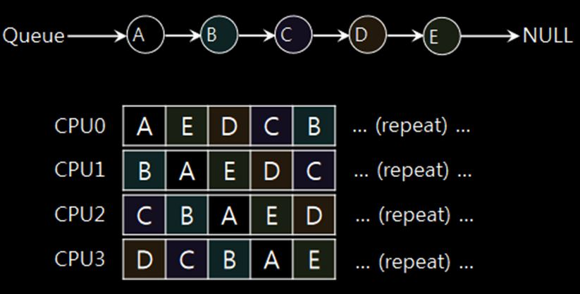
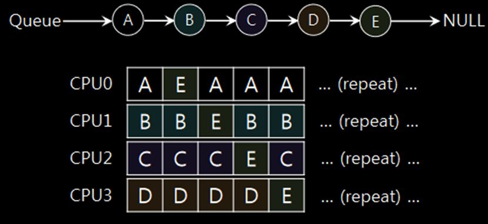
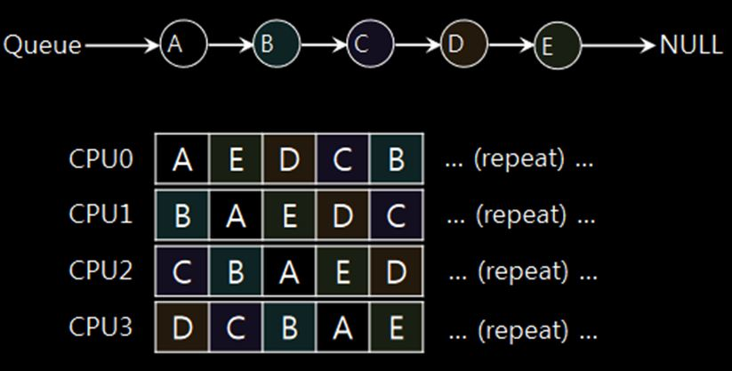
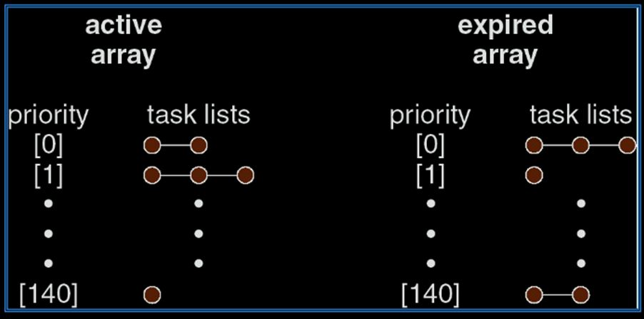

Proportional share scheduler
지금 PC의 CPU들은 turnaround time이나 response time이 크게 중요하지가 않음. (response time은 조금 중요하기도 하네) 쨌든 제일 중요한 거는 골고루 CPU를 나눠주는 거임.
Ticket Mechanism
Scheduler가 ticket을 1000장 발행함. Process A한테는 600장을 주고, Process B한테는 400장을 줌. 매번 context switching을 할 때마다 ticket 번호를 하나 뽑아서 그 번호를 갖고 있는 프로세스한테 CPU 사용권을 줌. Switching을 충분히 많이 하면 큰 수의 법칙이 적용돼서 A는 60% 정도의 점유율을 가질 거고 B는 40% 정도를 갖겠지? 이런 식으로 fairness를 구현.
이런 방식의 Randomness를 이용한 구현이 간단해서 좋음.
Ticket Currency
조금 더 뇌절
- 프로세스 A가 ticket을 100개를 갖고 있음.
- 근데 A가 자체적으로 ticket을 1000장 발급해서 child process한테 발급.
- global ticket과 local ticket이 환율이 있네 ㅋㅋ
- A가 자기의 global ticket을 새로 발급하면? inflation이 생김. 농담 아니고 진짜 용어가 ticket inflation임.
- 각 process가 자기가 가진 ticket의 개수를 늘리거나 줄일 수 있음
- 각 process가 heavy computation이 필요하면 재량껏 늘리는 거임. 걍 양심에 맡기는 거인 듯.
Unfairness metric
똑같이 10초가 걸리는 job A, B가 있다고 하자. A는 15초 뒤에 끝났고 B는 25초 뒤에 끝났어. 그럼 둘의 unfairness metric 는 로 계산함. 저 값이 1에 가까울수록 fair함.
둘이 실행 시간이 다른 job이면 어떻게 함? PPT에는 둘 다 runtime이 10이라고 하고 예시를 들었는데, 안 그러면 정의가 달라지는 거임?
만약 두 job이 아주 짧게 실행되는 job이면 unfairness가 1보다 많이 작음. 근데 둘다 오래 걸리는 job이면 그 사이에 context switching이 많이 일어날테니까 unfairness가 1에 수렴함. 즉, fair해짐.
Stride Scheduling
- 큰 수를 하나 생각함. 10000이라고 할게
- 어떤 프로세스가 ticket이 n장 있으면 걔의 stride는 10000 / n임.
- 매번 가장 작은 수를 가진 프로세스를 실행함. 실행 후에는 걔한테 걔의 stride만큼 더함
- 그럼 stride가 작을수록 자주 실행이 되겠네?
- 근데 다른 애들 실행하는 중간에 새로운 job이 들어오면? 다른 애들은 이미 숫자가 커져 있잖아? 그럼 새로운 job의 숫자가 아주 작으니까 걔만 계속 실행이 되겠네? 애매하네...
- 그럼 새로운 애의 수는 기존 애들의 수 중에서 최솟값으로 주나?
- 그것도 애매하긴 함. 새로운 애니까 초반에 CPU가 많이 필요할 수도 있잖아. 늦게 시작했으니까 뭘 많이 해야지.
- 이건 기술의 영역이 아니고 설계의 영역임. ㅋㅋ 같은 말인가
- 그럼 새로운 애의 수는 기존 애들의 수 중에서 최솟값으로 주나?
예시
큰 수 10000. A의 ticket은 100장, B의 ticket은 400장.
그럼 A의 stride는 100, B의 stride는 25. 둘의 pass value는 0에서 시작.
- 둘 다 pass value가 0. 둘중 아무거나 실행 (A라고 치자.)
- A의 pass value는 100, B의 pass value는 0. 그럼 B를 실행.
- A의 pass value는 100, B의 pass value는 25. 그럼 또 B를 실행.
- A의 pass value는 100, B의 pass value는 50. 또다시 B를 실행.
- ...
Scheduling on multicores
멀티코어는 한 프로세스의 성능을 높여주진 않지만 여러 쓰레드의 성능은 아주 높여줌.
Cache 복습
- Cache Coherence
- 어떤 CPU가 걔의 cache 안의 shared value를 update 했을 때, 그 사실을 다른 CPU한테 어떻게 알릴지에 관련된 문제
- bus snooping
- 근데 길게 언급 안해서 굳이 복습 안해도 될 듯
- cache directory도 나옴. ㅋㅋ 이것도 기억 X
- mutex
- lock을 잘 걸자. 근데 lock이 짜기도 힘들고 디버그하기도 힘들고 lock delay도 무시하기 힘듦.
- Cache Affinity
- A CPU에서 돌아가던 job을 B CPU에서 돌리려고해. 그럼 A CPU의 cache의 값을 그대로 복사해서 B CPU로 가져가야겠네? 매우 비효율적!
- 그래서 웬만해선 한 job은 한 CPU에서만 돌리려고 함.
SQMS
Single Queue Multiprocessor Scheduling
- 싱글 스레드에서 하던 방식을 그대로 적용한 거임.
- 다만 synchronization이 필요함. 두 CPU가 동시에 queue에 접근하면 문제될 수도 있으니까 queue에 접근하는 거는 lock을 써야지
- 위에서 말한 cache affinity도 문제가 됨.
- 
- CPU는 4개인데 job이 5개면 모든 job이 CPU를 바꿔가면서 실행함. 즉, 모든 switch마다 cache를 싹 비우고 싹 옮겨야함. ㅋㅋㅋㅋ
- 
- 일단 해결은 함. 근데 저거 구현하기가 빡셈. 또 저러면 별로 fair하지도 않음. E는 딴 애들보다 실행시간을 훨씬 덜 받잖아.
- 
MQMS
Multi Queue Multiprocessor Scheduling
- global queue가 따로 있고, 또 각각 CPU마다 local queue가 있음.
- global queue가 CPU한테 job을 주면 그 job은 그 CPU의 queue 위에서만 있음.
- 물론 필요에 따라 가끔씩 다른 CPU로 옮겨갈 수도 있음.
- 이러면 synchronization overhead가 훨씬 줄어듦. 내 queue는 나만 접근하니까.
- 내 queue는 나만 보니까 information sharing도 안해도 됨.
- 이건 단점일 수도 있음. 나는 job이 엄청 많은데 다른 애는 놀고 있어도 모르잖아. 이 상황에서는 내 job을 다른 애한테 주는게 낫지.
- 이게 좀 심각한 문제임. load imbalance. 애들끼리 로드가 밸런스가 안 맞음.
- load imbalance 해결하는게 빡셈
- CPU 두개가 job을 1개/2개 갖고 있다고 치자.
- 그래서 job migration을 함. 그럼 이제 2개/1개가 됐네? ㅋㅋ 여전히 imbalanced네? 그래서 또 job migration을 함. 그래도 1개/2개네...
- 이런식으로 무한 루프 돎. 이러면 비효율적임
- 그래서 work stealing이라는 기법을 씀.
- 내가 일 많다고 남한테 짬 때리는게 아니고
- 일 없는 애들이 돌아다니면서 바빠 보이는 애들 일을 훔쳐오는 거임.
- 짬때리는 방식은 서로서로 무한 짬때리기가 가능하지만 훔쳐오기 방식은 그게 안되잖아.
- 좋긴한데 오버헤드가 큼. 또 scaling하기도 힘듦.
- 오버헤드를 줄이기 위해서 random approach를 사용.
- 내가 일이 없으면, 다른 모든 CPU를 탐색하는게 아니고 random하게 몇개의 CPU만 확인해서 work stealing을 함. 없으면 걍 계속 노는 거고.
O(1) Scheduler
Linux에서 예전에 쓰던 scheduler. 이름 무시무시하네 ㄷㄷ
- CPU마다 queue를 2개씩 돌림. 각 queue는 priority가 140 단계가 있음. 100단계 이상은 user mode, 그 아래는 real time mode
- queue는 각각 active, expired임.
Vec<LinkedList<Process>>가 2개 있는 거고,Vec안에서 index가 곧 priority임.-  (클릭해서 확대)
- 매번 active queue에서 priority가 가장 높은 process 하나 뽑아옴.
- 저거 뽑는게 O(1)임. 140개의 entry를 empty/non-empty로 나눔. 그럼 1bit만 있으면 되지? 총 140bit짜리 bitmap 하나만 있으면 되네.
- 총 140bit 중에서 가장 작은 자리수의 1을 찾으면 되지? 그거 해주는 instruction이 있대.
- 각 process마다 time slice(주어진 총 시간)와 quantum(switching까지의 시간)이 있거든? time slice 다 쓴 process는 expired queue로 보냄.
- 만약 active queue가 비었다? 그럼 expired queue와 active queue를 통째로 바꿈. 포인터만 바꾸면 돼서 쉬움.
- Queue를 바꿀 때 priority도 바꿈.
- avg sleep time을 보고 interactive한지 아닌지를 판단함.
- IO-heavy는 mostly sleeping이니까 priority를 높게 주고 CPU-heavy는 mostly running이니까 priority를 낮게 줌.
- 그대신 CPU-heavy는 time slice를 크게 주고, IO-heavy는 time slice를 작게 줌. 어차피 IO-heavy는 빨리 sleep하러 갈테니까.
CFS
Completely Fair Scheduler
Linux에서 O(1) 버리고 이걸로 갈아탔대.
- time slice도 안 쓰고, sleep time tracking도 안 하고, ... 훨씬 간단해짐!
- interactive performance와 CPU utilization을 최대화하자!
- Red Black tree를 쓴대.
- CPU마다 tree가 따로 있음.
- 각자 virtual runtime이 있음. CPU를 얼마나 썼는지 측정한 거임. 매번 virtual runtime이 가장 작은 놈에게 CPU를 줌. 그럼 fair하겠지?
- ㅇㅎ v runtime 갖고 red black tree를 만든 다음에 매번 left most node를 꺼내서 걔한테 CPU를 주면 되네.
- 물론 이러면 IO-heavy한 친구들이 유리함. 근데 교수님 말씀으로는 요즘 컴퓨터는 그래도 괜찮대.
Group Scheduling
- 여러 프로세스가 있는데, 서로 협력을 해야함. 서로를 고려하면서 scheduling을 해야 효율적인 경우가 있음. 그럼 scheduler가 걔네를 모아서 scheduling을 해야해... 빡세네.
- 아 이것도 CFS 안에 있는 개념인 듯? CFS가 group scheduling을 하나봐
Modular scheduling
- 이것도 CFS 안에 있는 개념.
- 각 group마다 다른 형태의 scheduling을 할 수 있도록 design.